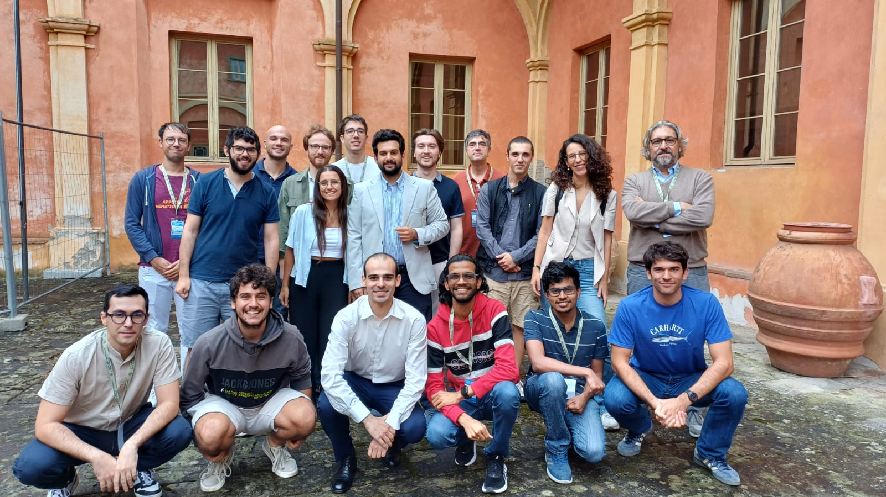
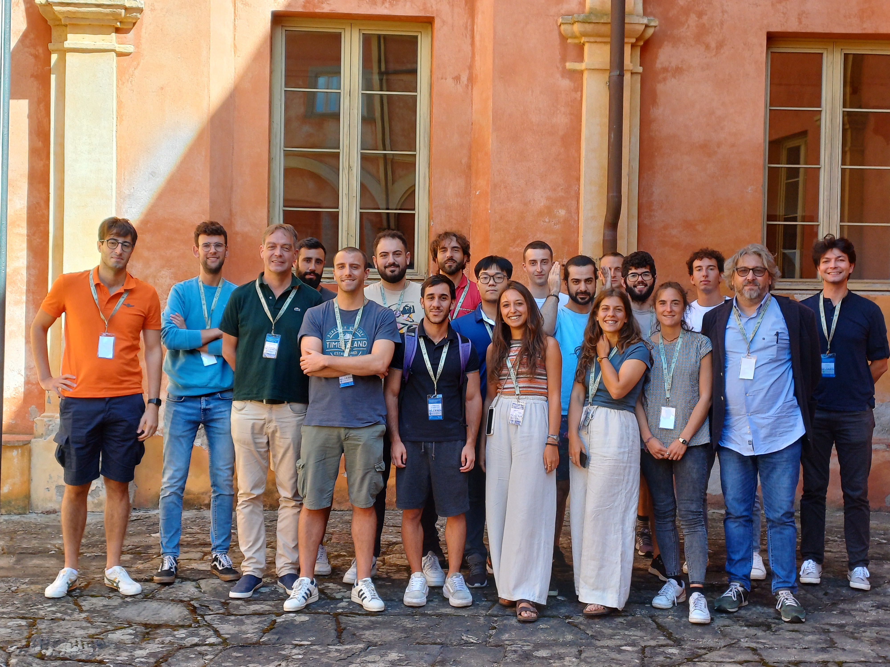
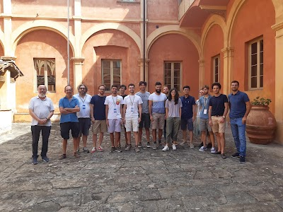
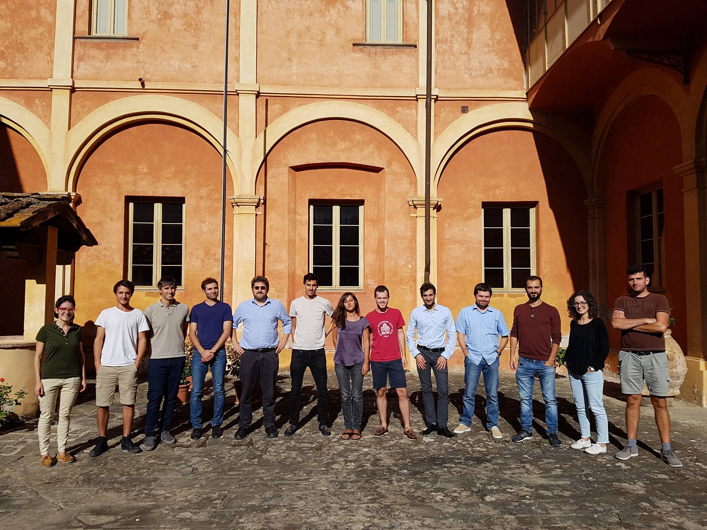
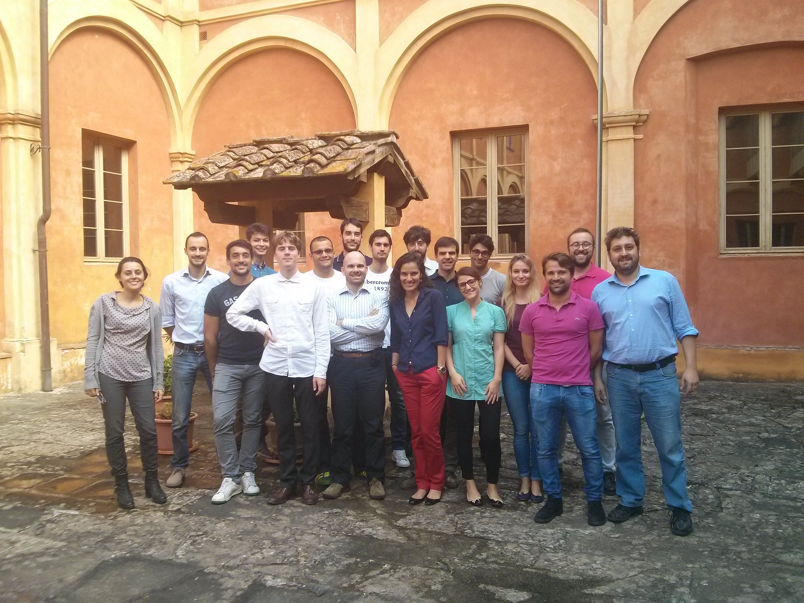
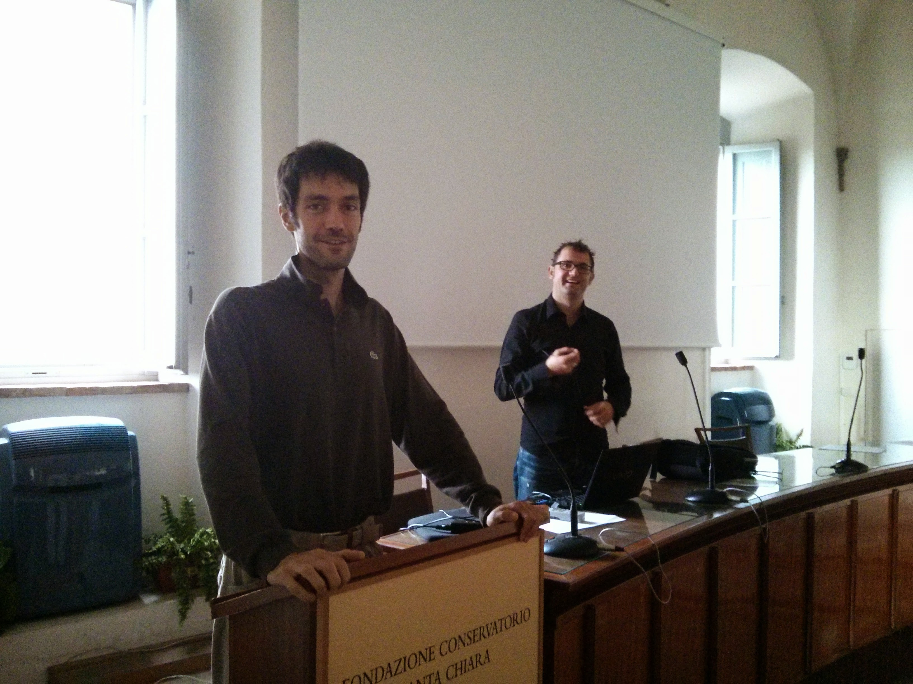

Summer Schools
Table of Contents
- San Miniato Summer School [2025-09]
- San Miniato Summer School [2024-09]
- San Miniato Summer School [2023-09]
- San Miniato Summer School [2022-09]
- San Miniato Summer School [2019-09]
- San Miniato Summer School [2018-09]
- San Miniato Summer School [2017-09]
- San Miniato Summer School [2016-09]
- San Miniato Summer School [2015-09]
- San Miniato Summer School [2014-09]
- San Miniato Summer School [2013-09]
- San Miniato Summer School [2012-09]
San Miniato Summer School [2025-09]
In the 2025 edition of the Summer School of Mathematics for Economic and Social Sciences Daria Ghilli from the University of Pavia and Enrico Scala from the University La Sapienza in Roma lectured on "Combinatorial stochastic models and mean field games".

San Miniato Summer School [2024-09]
In the 2024 edition of the Summer School of Mathematics for Economic and Social Sciences Guido Germano from University College London lectured on "Computational Methods in Finance and Economics".

San Miniato Summer School [2023-09]
In the 2023 edition of the Summer School of Mathematics for Economic and Social Sciences Fausto Gozzi e Salvatore Federico will lecture on "Dynamic Optimization in Economics and Finance".

San Miniato Summer School [2022-09]
In this year edition of the Summer School of Mathematics for Economic and Social Sciences Nicolò Cesa-Bianchi and Pierre Laforgue will lecture on "Online Learning with Applications to Digital Markets".

San Miniato Summer School [2019-09]
This year Stefano Galatolo, Università di Pisa and Isaia Nisoli, UFRJ presented "An introduction to random dynamical systems and their perturbations". See the web page of the school and the following nice picture

San Miniato Summer School [2018-09]
This year Marco Lippi lectured about "Mathematical Methods for Time Series Analysis". See the web page of the school and the following nice picture (some students are missing)

San Miniato Summer School [2017-09]
This year Fosca Giannotti, Mirco Nanni and Riccardo Guidotti lectured about "Data Mining and Machine Learning for Business and Organizations". See the web page of the school and the following nice picture

San Miniato Summer School [2016-09]
This year Maurizio Pratelli with help from Dario Trevisan and Eli Musta lectured about "Stochastic Processes and Stochastic Calculus with application to Economics and Finance". See the web page of the school and the following nice picture
![yJc_3jRzbQWnQ55PuQ0zNhhChAOpBU3XxXpYlVD38WVMCHs5V5HLua_-dtNPiKSjHt9brFwHZi-gAuZpCyGULE33CGjHVLe6OHW0Pnwbdcbsq_3YDVbtD9A9KYZsrlCsFcGrcfnWgwRCgaaISxgTLLdxtH1vnOorXGEbxxxOjqq_p49-Umt4UyRCj39Yx7MyUgSk_GRrd2DQi9YeyDz6XtH1aLzUmMHX-fGC7jIcpeUFKwqjWGItFqWFQHPDdw5lnZsvrZsOk32wXDIYwvnwqvFpZIUu5k_2Rvxpj7ifyPR_LnfyDQtXaPyZfxue97Q-1L7Q4c6bv5Ne1DYBQxlMMQugfbNyLJaMz-asNhyiJbjBN_JxWIhL3-My6c-6UgAzXaE4GIdP1BsSLheg6XRdEJdFjR1uTUnVgQYHI0zy13AHyYqywBwDpvAsRoCtW7da-riUrQU8-rSY0yb1ccn-ZWX5aQH2koOl3C_Ctgcur4M0dytWL4yUGa1-Q41LnmwApZUV4meB_ehe2T2o1JezV5ddFtnUPPqqCel0qMtI2SheHuruCr9s38AoNDTGkuT20GWVhPGA_YSwCE5_NTRnrEZPv9kqvFGy4rRv457cSsWEWXm2?.jpg](https://lh3.googleusercontent.com/yJc_3jRzbQWnQ55PuQ0zNhhChAOpBU3XxXpYlVD38WVMCHs5V5HLua_-dtNPiKSjHt9brFwHZi-gAuZpCyGULE33CGjHVLe6OHW0Pnwbdcbsq_3YDVbtD9A9KYZsrlCsFcGrcfnWgwRCgaaISxgTLLdxtH1vnOorXGEbxxxOjqq_p49-Umt4UyRCj39Yx7MyUgSk_GRrd2DQi9YeyDz6XtH1aLzUmMHX-fGC7jIcpeUFKwqjWGItFqWFQHPDdw5lnZsvrZsOk32wXDIYwvnwqvFpZIUu5k_2Rvxpj7ifyPR_LnfyDQtXaPyZfxue97Q-1L7Q4c6bv5Ne1DYBQxlMMQugfbNyLJaMz-asNhyiJbjBN_JxWIhL3-My6c-6UgAzXaE4GIdP1BsSLheg6XRdEJdFjR1uTUnVgQYHI0zy13AHyYqywBwDpvAsRoCtW7da-riUrQU8-rSY0yb1ccn-ZWX5aQH2koOl3C_Ctgcur4M0dytWL4yUGa1-Q41LnmwApZUV4meB_ehe2T2o1JezV5ddFtnUPPqqCel0qMtI2SheHuruCr9s38AoNDTGkuT20GWVhPGA_YSwCE5_NTRnrEZPv9kqvFGy4rRv457cSsWEWXm2?.jpg)
San Miniato Summer School [2015-09]
This year has been my turn as a lecturer. With Pietro Dindo and Daniele Giachini we have organized and delivered the teaching at the Summer School of Mathematics for Economics and Social Sciences in San Miniato. See the web page. The title of the lectures was Financial Economics 2.0: bubbles, instability and speculation and here is the syllabus.

San Miniato Summer School [2014-09]
The School is a collaboration between the International Doctoral Program in Economics in Scuola Sant'Anna and the Research Center in Mathematics "Ennio de Giorgi". The topic of this year was "The Evolution of Games and Social Contacts: Preferences, Norms and Interactions" and the main teachers were Leonardo Boncinelli and Paolo Pin.

San Miniato Summer School [2013-09]
The School is a collaboration between the International Doctoral Program in Economics in Scuola Sant'Anna and the Research Center in Mathematics "Ennio de Giorgi". The topic of this year was "Information theory, chaos and ergodicity with application to data analysis" and the main teachers were Stefano Marmi and Fabrizio Lillo

San Miniato Summer School [2012-09]
The School is a collaboration between the International Doctoral Program in Economics in Scuola Sant'Anna and the Research Center in Mathematics "Ennio de Giorgi". The topic of this year was "Introduction to Bifurcation Theory" and the main teacher Florian Wagener.


A description of the course is available here.